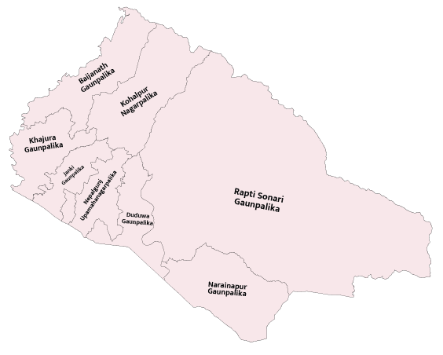

बाँके जिल्लामा कुल मतदाता ३५०३६२ रहेका छन्, जसमा पुरुष १७८१३९, महिला १७२२२३ र अन्य ० मतदाता समावेश छन्। यस जिल्ला लुम्बिनी प्रदेशमा पर्दछ। यस जिल्लाअन्तर्गत ३ प्रतिनिधि सभा निर्वाचन क्षेत्रहरू रहेका छन्।